Übersicht
Dieser Artikel wurde für die folgenden Ubuntu-Versionen getestet:
Ubuntu 14.04 Trusty Tahr
Zum Verständnis dieses Artikels sind folgende Seiten hilfreich:
 Viele Nutzer bemängeln, dass mit der Einführung der GNOME Shell viele Funktionen der GNOME-Oberfäche verloren gegangen sind. Viele der verloren gegangen Funktionen können mithilfe von Erweiterungen ergänzt werden. Da es aber im Lauf der Zeit viele verschiedene Erweiterungen entwickelt wurden, soll dieser Artikel einen kleinen Überblick über nützliche Erweiterungen bieten.
Viele Nutzer bemängeln, dass mit der Einführung der GNOME Shell viele Funktionen der GNOME-Oberfäche verloren gegangen sind. Viele der verloren gegangen Funktionen können mithilfe von Erweiterungen ergänzt werden. Da es aber im Lauf der Zeit viele verschiedene Erweiterungen entwickelt wurden, soll dieser Artikel einen kleinen Überblick über nützliche Erweiterungen bieten.
Hinweis:
Da die verfügbaren Erweiterungen von der eingesetzten GNOME-Shell-Version abhängen, behandelt dieser Artikel nur die Erweiterungen für die Version 3.10, die in Ubuntu 14.04 eingesetzt wird.
Vorinstallierte Erweiterungen¶
Unter Ubuntu GNOME sind standardmäßig schon einige Erweiterungen installiert. Falls man die GNOME Shell nachinstalliert hat, dann kann man diese Erweiterungen mithilfe des folgenden Paketes installieren:
gnome-shell-extensions (universe)
 mit apturl
mit apturl
Paketliste zum Kopieren:
sudo apt-get install gnome-shell-extensions
sudo aptitude install gnome-shell-extensions
Folgende Erweiterungen stehen nach der Installation zur Verfügung:
| Vorinstallierte Erweiterungen | ||
| Name | Beschreibung | Bild |
Alternatetab  | Zeigt beim Umschalten zwischen Fenstern mithilfe von Alt + Tab ⇆ einen fensterbasierten Umschalter an, welcher die Fenster nicht gruppiert. Diese Erweiterung wird standardmäßig für GNOME Classic verwendet. | 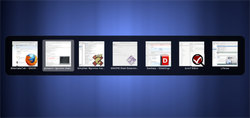 |
| Applications menu | Fügt dem Panel ein kategorisiertes Anwendungsmenü hinzu. Diese Erweiterung versucht, das alte Anwendungsmenü von GNOME 2 nachzubilden und wird daher standardmäßig für GNOME Classic verwendet. | 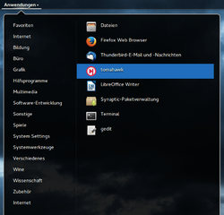 |
| Auto move windows | Verschiebt beim Öffnen einer neuen Anwendung diese automatisch auf eine leere virtuelle Arbeitsfläche. | |
| Launch new instance | Öffnet automatisch eine neue Instanz der Anwendung, wenn man im Anwendungsmenü oder in der Dash eine auf den Starter einer Anwendung klickt. Diese Erweiterung ist an das Veralten des alten GNOME-2-Desktops angelehnt und wird daher standardmäßig für GNOME Classic verwendet. | |
| Native window placement | Zeigt alle geöffneten Anwendung in einer übersichtlichen und kompakteren Darstellung an. | 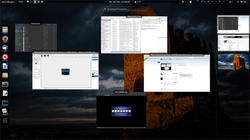 |
| Place status indicator | Fügt ein Menü mit allen Ordnern und Lesezeichen ins Panel hinzu. Diese Erweiterung ist an das alte Orte-Menü von GNOME 2 angelehnt und wird daher auch standardmäßig für GNOME Classic verwendet. | 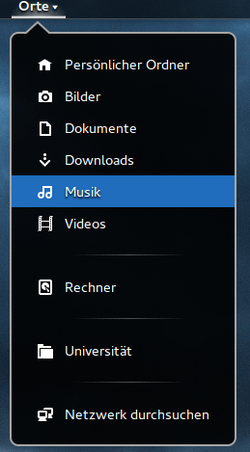 |
| Removeable drive menu | Fügt ein Menü ins Panel ein, mit dem man alle Wechseldatenträger verwalten kann. | 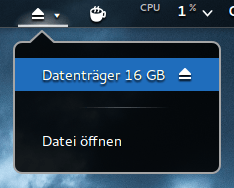 |
| Systemmonitor | Zeigt die aktuelle CPU- und Arbeitsspeicher-Auslastung in der Benachrichtigungs-Leiste an. | 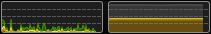 |
| User theme | Ermöglicht es, eigene lokal gespeicherte Themen für die Shell zu nutzen. Mehr Informationen dazu gibt es im Artikel GNOME Shell/Themes. | |
| Window list | Zeigt eine Liste der geöffneten Anwendungen am unteren Ende des Bildschirms an. Diese Erweiterung wird standardmäßig für GNOME Classic verwendet. | |
| Workspace indicator | Fügt einen Indikator ins Panel ein, der anzeigt, auf welcher virtuellen Arbeitsfläche man sich gerade befindet und ermöglicht ein einfaches Wechseln zu einer anderen Arbeitsfläche. | 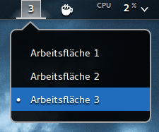 |
| Windownavigator | Ermöglicht die Auswahl einer virtuellen Arbeitsfläche oder einer Anwendungen aus dem Übersichtsmodus via Tastatur. Strg + 1 , 2 … erlaubt die Auswahl einer virtuellen Arbeitsfläche und Alt + 1 , 2 … die Auswahl einer Anwendung. | |
Nützliche Erweiterungen¶
Aus den offiziellen Paketquellen¶
Die folgenden Erweiterungen können bequem aus den Paketquellen installiert werden.
Timer (Kurzzeitwecker)¶
Das aus GNOME 2 bekannte "Timer Applet" hat den Weg in die GNOME Shell gefunden. Ab Ubuntu 12.04 kann der Timer ganz einfach über die Paketverwaltung installiert werden:
gnome-shell-timer (universe)
mit apturl
Paketliste zum Kopieren:
sudo apt-get install gnome-shell-timer
sudo aptitude install gnome-shell-timer
Wetter¶
| 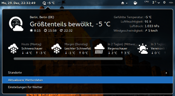 |
| Wetter-Erweiterung im GNOME-Shell-Panel |
Ab Ubuntu 14.04 gibt es eine Erweiterungen, mit der die aktuelle Wetterlage einer beliebigen Stadt im Panel angezeigt werden kann. Diese Erweiterung lässt sich einfach über die Paketverwaltung installieren:
gnome-shell-extension-weather (universe)
mit apturl
Paketliste zum Kopieren:
sudo apt-get install gnome-shell-extension-weather
sudo aptitude install gnome-shell-extension-weather
Von extensions.gnome.org¶
Die folgende Tabelle gibt einen Überblick über einige weitere nützliche Erweiterungen für die GNOME Shell, die nicht über die offiziellen Paketquellen, sondern nur über die Internetseite extensions.gnome.org installiert werden können. Hier ist eine deutlich größere Auswahl an Erweiterungen zu finden.
| Nützliche Erweiterungen | ||
| Name | Beschreibung | Bild |
| Advanced volume mixer | Diese Erweiterung ermöglicht es, die Lautstärke aus dem Panel heraus für jede Anwendung getrennt festzulegen. | 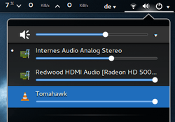 |
| Caffeine | Caffeine ermöglicht es, die Energiespar-Einstellungen manipulieren kann. So kann zum Beispiel verhindert werden, dass während einer Präsentation oder Video-Wiedergabe der Bildschirmschoner aktiv wird. Es ist dem eigenständigen Programm Caffeine nachempfunden. | 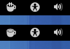 |
| Gradio | Internetradio nutzen. | |
| Hide Top Bar | Mit dieser Erweiterung lässt sich das obere Panel automatisch verbergen. Mithilfe der Einstellungen ist es auch möglich, eine Taste zu belegen, mit der das Panel ein- und wieder ausgeblendet werden kann. | |
| Media player indicator | Diese Erweiterung erlaubt es, verschiedene Abspielprogramme direkt aus dem Panel heraus zu bedienen. Unterstützt werden alle Anwendungen, die von MPRIS2 unterstützt werden. Dazu zählen beispielsweise Rhythmbox, VLC, Totem, Guayadeque oder Tomahawk. | 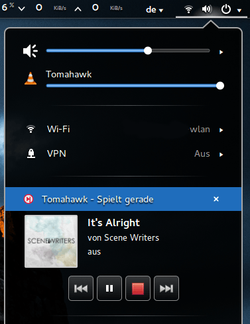 |
| System-Monitor | Alternativer System-Monitor, der nicht einen Graph in der Benachrichtigungsleiste, sondern die relevanten Informationen im oberen Panel bereitstellt. Hinweis: Damit diese Erweiterung funktioniert, müssen folgende Pakete installiert sein: sudo apt-get install gir1.2-gtop-2.0 gir1.2-networkmanager-1.0 | 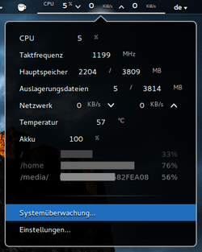 |
Dschaerf's Erweiterungen¶
Die folgenden Erweiterungen wurden vom Nutzer dschaerf erstellt und lassen sich nach dem Hinzufügen seines PPAs einfach über die Paketverwaltung installieren.
Adresszeile zum Hinzufügen des PPAs:
ppa:dschaerf/myubuntu
Hinweis!
Zusätzliche Fremdquellen können das System gefährden.
Ein PPA unterstützt nicht zwangsläufig alle Ubuntu-Versionen. Weitere Informationen sind der  PPA-Beschreibung des Eigentümers/Teams dschaerf zu entnehmen.
PPA-Beschreibung des Eigentümers/Teams dschaerf zu entnehmen.
Damit Pakete aus dem PPA genutzt werden können, müssen die Paketquellen neu eingelesen werden.
| 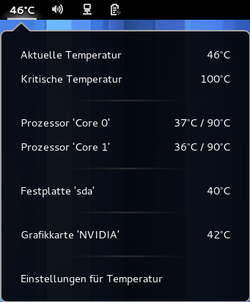 |
| Temperaturanzeige im GNOME-Shell-Panel |
Temperature@dschaerf¶
Diese Erweiterung stellt Anwendern im Panel eine Übersicht über alle auslesbaren Temperaturen der Hardware bereit.
Folgende Hardwaretemperaturen lassen sich anzeigen:
"Prozessorkern"
"Festplatten" (erfordert das Kommandozeilenprogramm hddtemp)
"Grafikkarten"
dschaerf-extension-temperature (ppa)
mit apturl
Paketliste zum Kopieren:
sudo apt-get install dschaerf-extension-temperature
sudo aptitude install dschaerf-extension-temperature
Mehr Informationen zu dieser Erweiterung findet man auf der Projektseite  .
.
PanelManager@dschaerf¶
Diese Erweiterung ergänzt die GNOME Shell um umfangreiche Einstellungsmöglichkeiten des Panels und erlaubt dem Anwender, Schaltflächen für beispielsweise den Akku, das Netzwerk, für Datum & Uhrzeit, Barrierefreiheit und andere zu verwalten.
dschaerf-extension-panelmanager (ppa)
mit apturl
Paketliste zum Kopieren:
sudo apt-get install dschaerf-extension-panelmanager
sudo aptitude install dschaerf-extension-panelmanager
Ergänzende Informationen finden sich wiederum auf der Projektseite des Betreuers.
| 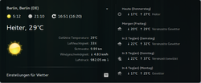 |
| Wetter-Erweiterung von dschaerf |
Weather@dschaerf¶
Diese alternative Wetter-Anzeige zeigt im oberen Panel in der Mitte die aktuelle Temperatur inkl. Wettersymbol an und bietet darüber hinaus ein ausklappbares Menü mit weiteren Detailanzeigen für den aktuellen Tag sowie eine Wettervorhersage für die nächsten 4 Tage. Diese Erweiterung bezieht ihre Wetterdaten vom Internet-Dienst Yahoo!Wetter .
dschaerf-extension-weather (ppa)
mit apturl
Paketliste zum Kopieren:
sudo apt-get install dschaerf-extension-weather
sudo aptitude install dschaerf-extension-weather
Weitere ergänzende Informationen finden sich auf der Projektseite des Betreuers.
Links¶
GNOME Shell/Extensions - Installationsanleitung für GNOME Shell Extensions
GnomeShell/Extensions
- Bauanleitung für eigene ErweiterungenGNOME Shell
 Übersichtsartikel
Übersichtsartikel
- Erstellt mit Inyoka
-
 2004 – 2017 ubuntuusers.de • Einige Rechte vorbehalten
2004 – 2017 ubuntuusers.de • Einige Rechte vorbehalten
Lizenz • Kontakt • Datenschutz • Impressum • Serverstatus -
Serverhousing gespendet von